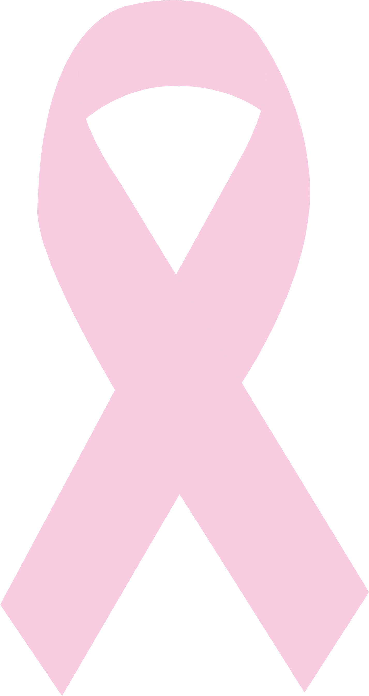
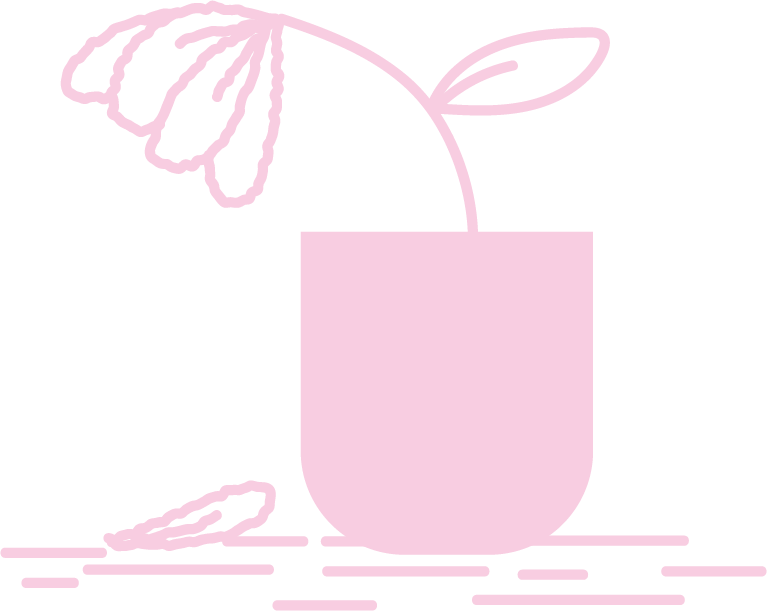
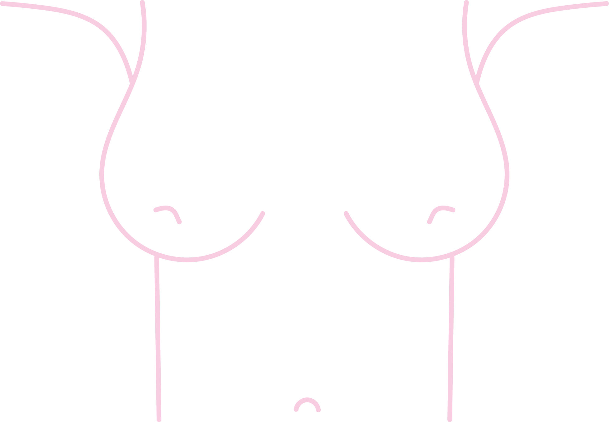

19 de octubre
Día Internacional de lucha
contra el cáncer de Mama
En 2020, el cáncer de mama fue la
principal causa de fallecimientos femeninos.

De ahí la importancia de la autoexploración.
Pueden presentarse cambios de tamaño y forma,...

...cambios en la coloración,...
...bultos,...

...hendiduras o huecos,...
...hundimiento de pezón,...

...secreciones desconocidas.

50% de los casos corresponden a mujeres sin factores de riesgo.

Los hombres no están exentos de padecerlo.

Si identificas alguno de estos síntomas, busca atención médica
Secretaría de Salud de Guanajuato
473 735 2700 ext. 158